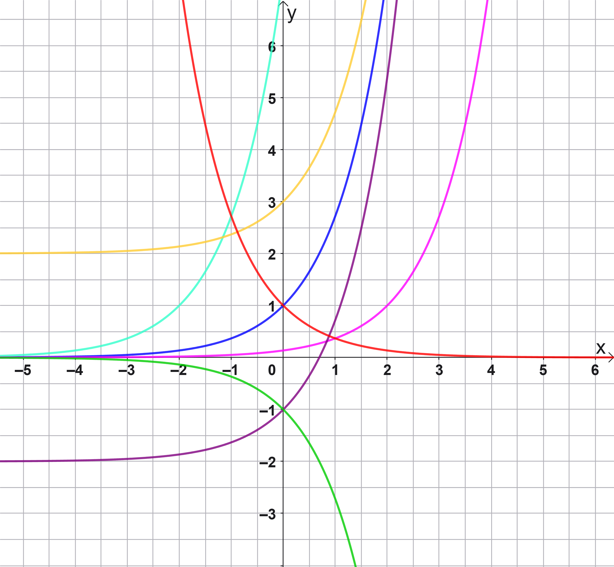

Mathematik 12. Klasse – Gymnasium Bayern
Ergänzen Sie die wesentlichen Eigenschaften der Funktion \( f(x) = e^x \):
| Eigenschaft | Ihre Antwort |
|---|---|
| Definitionsmenge \( D_f \) | Tipp: Welche x-Werte darf man einsetzen? |
| Wertemenge \( W_f \) |
(Hinweis: Bei Verwendung der Intervallschreibweise kann für \(\infty\) 'unendlich' ausgeschrieben werden)
Tipp: Kann \( e^x \) jemals negativ oder null werden?
|
| Nullstellen | Tipp: Besitzt \( e^x = 0 \) eine Lösung? |
| Symmetrie | Tipp: Ist der Graph an einer Achse gespiegelt? |
| Monotonie | Betrachte das Steigungsverhalten der Funktion. |
| Schnittpunkt y-Achse | Tipp: Berechne \( e^0 \). Beachte, dass ein Punkt in der Form (x|y) gesucht wird. |
Ordnen Sie den Funktionstermen die entsprechende Farbe des Graphen aus der Abbildung zu.

| Funktionsterm | Graphfarbe wählen |
|---|---|
| \( f(x) = e^x \) | |
| \( f(x) = e^{x+2} \) | |
| \( f(x) = e^{-x} \) | |
| \( f(x) = e^x + 2 \) | |
| \( f(x) = e^x - 2 \) | |
| \( f(x) = e^{x-2} \) | |
| \( f(x) = -e^x \) |
Für die natürliche Exponentialfunktion \( f(x)=e^x \) gilt: